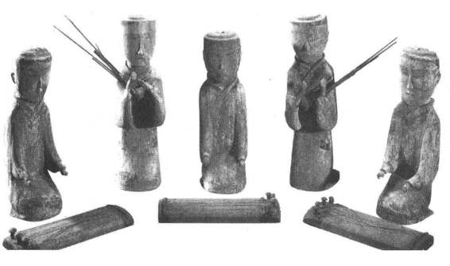
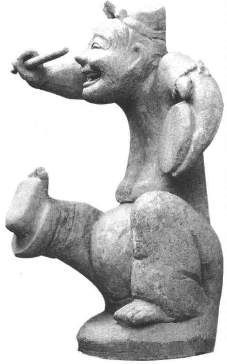
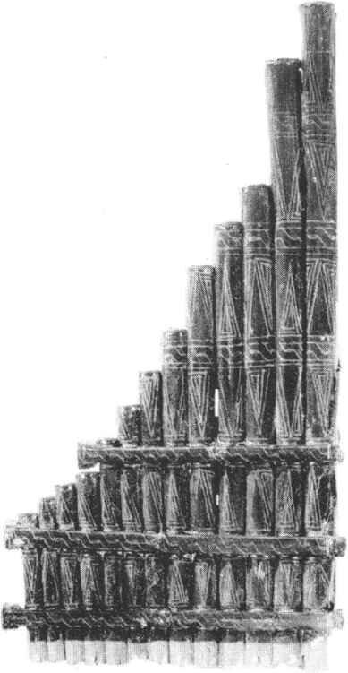

秦朝设置太乐令、太乐丞及乐府令、乐府丞。［7］西安秦始皇陵曾出土铜钟1件，上铸“乐府”二字，可以证实当时确有此官署。汉承秦制，朝廷也设立“太乐”和“乐府”两个音乐机构。前者掌管雅乐；后者掌管世俗音乐，古书上贬称为“郑声”。《汉书·礼乐志》说：汉武帝定郊祀之礼，祭后土（土神）于汾阴。“乃立乐府，采诗夜诵，有赵、代、秦、楚之讴。以李延年为协律都尉。多举司马相如等数十人，造为诗赋，略论律吕，以合八音之调，作十九章之歌。”按元鼎四年（前113），汉武帝在汾阴立后土祠。立乐府大概是在这一年或稍后。乐府本来是已经存在的机构，这里所说的“立”应当是扩大的意思。乐府所搜集和整理的乐歌和资料，主要是民间音乐。记载中所说的“赵、代、秦、楚之讴”，赵、代在北方，秦在西方，楚在南方。这里只是举这四个地区作为代表，实际上它所搜集的地方乐歌远远超出了这些地区。《礼乐志》还说：汉武帝时，“常御（用）及郊庙皆非雅乐”，“内有掖庭材人（宫内乐人），外有上林乐府（乐府在上林苑中），皆以郑声施于朝廷。”当时，俗乐不仅流行于社会上，而且盛行于朝廷和官府中。（图11—5）

图11-5 汉墓出土彩绘木雕管弦乐队
汉哀帝即位（前6年）后，曾下诏罢乐府。当时乐府中的人员“大凡八百二十九人”，分工很细。汉哀帝虽然把这些人员裁减了大半，留者改属太乐署，撤销了乐府；“然百姓渍渐日久，又不制雅乐有以相变，豪富吏民，湛沔自若”［8］。这种俗乐已经广泛地传播起来。
东汉虽然没有乐府这个官署的名称，但“黄门鼓吹署”的职责却是和西汉乐府相同的。［9］东汉继续搜集整理民间的音乐。
汉代的统治阶级为了政治目的和享乐而设立乐府，但乐府对于搜集整理和传播民间音乐也起了一定的作用。《汉书·艺文志》著录的歌诗314篇，大概就是西汉乐府所用乐歌的一部分。乐府的乐歌大致可以分为两大类，即鼓吹曲与相和歌。
（1）鼓吹曲用于郊庙祭祀、军队、仪仗、典礼中，是一种进行曲或节奏明朗的乐曲。这种乐曲吸收了我国北部和西部少数民族的乐曲因素，但采用更多的还是中原各地的这种性质的民间歌曲。乐府中有“鼓员”、“吹鼓员”——如“骑吹鼓员”、“江南鼓员”、“沛吹鼓员”等，就是专门演奏鼓吹曲的。《艺文志》著录的歌诗中，如《高祖歌诗》、《汉兴以来兵所诛灭歌诗》、《出行巡狩及游歌诗》等，都属于这一类。这类歌诗虽然没有标明地区，可能也有地方特色。如《高祖歌诗》当指汉高祖刘邦所作的《大风歌》。《史记·高祖本纪》记载：
高祖还归，过沛，留。置酒沛宫，悉召故人父老子弟纵酒。发沛中儿得百二十人，教之歌。酒酣，高祖击筑，自为歌曰：“大风起兮云飞扬，威加海内兮归故乡，安得猛士兮守四方！”令儿皆和习之。
沛是旧楚地，这部鼓吹乐应当属于楚声。汉高祖也爱好他的乡土音乐楚声。乐府中的“沛吹鼓员”必然演唱《大风歌》，另外，还会演唱沛县一带的其他地方乐歌。
（2）相和歌 源出于各地流行的民歌。《宋书·乐志》说：“相和，汉旧歌也，丝竹更相和，执节（打拍子）者歌。”又说：“凡乐章古辞，今之存者，并汉世街陌谣讴。”相和歌的主要来源是街陌谣讴，而街陌谣讴往往采用互相唱和的形式，这大概就是相和歌得名的由来。《艺文志》著录的歌诗中，如《吴楚汝南歌诗》，《燕代讴雁门云中陇西歌诗》，《邯郸河间歌诗》，《齐郑歌诗》，《左冯翊秦歌诗》，《京兆尹秦歌诗》等，都属于这一类，乐府采诗的范围已遍及黄河、长江流域。这时已有用曲线表示的乐谱。目录中有《河南周歌诗》7篇，又有《河南周歌〔诗〕声曲折》7篇；有《周谣歌诗》75篇，又有《周谣歌诗声曲折》75篇。声曲折显然是和歌诗配合的乐谱。
现在所能看到的汉代乐府歌词，大部分是东汉作品。《宋书·乐志》列举的“汉世街陌谣讴”有《江南可采莲》、《乌生》、《十五》、《白头吟》等。“梁鼓角横吹曲”中有古诗《十五从军征》一首，标题《〈紫骝马〉歌辞》。研究者认为这首诗就是《十五》的歌词，是东汉末年的作品：
十五从军征，八十始得归。道逢乡里人，“家中有阿谁？”“遥望是君家，松柏冢累累。”兔从狗窦入，雉从梁上飞。中庭生旅（野生）谷，井上生旅葵。舂谷持作饭，采葵持作羹。羹饭一时熟，不知贻阿谁！出门东向望，泪下沾我衣。
《紫骝马》本是鼓吹曲，诗作者却用它唱出了反对战争的悲歌。东汉另一首民歌《江南可采莲》是相和歌一类的作品：
〔唱〕江南可采莲，莲叶何田田，鱼戏莲叶间。
〔和〕鱼戏莲叶东，鱼戏莲叶西，鱼戏莲叶南，鱼戏莲叶北。
研究者多认为这首歌诗是一唱众和的形式，可以反映出乐曲活泼自然的民歌特色。
战国末年的荀子或他的弟子作过《成相》篇，杨荫浏认为这是个受了民间影响的说唱本子。到了汉代，没有留下关于说唱文学的记载，只有相和大曲《东门行》和这种体裁相似。［10］但四川成都出土的东汉说唱俑，左臂挟鼓，右手执桴，兴高采烈，正是表演说唱曲艺的生动形象；（图11—6）四川彭山出土的东汉说唱俑，仪态从容，表情幽默，举右臂作比画状。可见汉代确有这种曲艺，而且还很流行，只是这种作品没有流传下来。

图11-6 四川成都天回山出土的击鼓说唱陶俑
西汉时，关于音乐的论辩，在春秋以来各家音乐思想的基础上，又有很大的进展。于是有人把他们的有关言论汇集成具有综合性的音乐理论著作《乐记》。《乐记》非一人一时所作，但主旨以儒家和荀子学派的学说为纲。它也把乐和礼相提并论，把乐作为重要的教育和施政的工具。它反对民间音乐“郑卫之音”和“桑间、濮上之音”。它认为：“声音之道，与政通矣”；“礼乐刑政，其极一也，所以同民心而出治道也。”更强调法家的主张。《乐记》对音乐产生的过程以及音乐既形成之后又反过来对人们心情的影响，作了细致的分析。它说：“凡音之起，由人心生也。人心之动，物使之然也。”这种认识超过了孔子和荀子，既深刻而又鲜明。
先秦时期，中外文化已有交流，至汉武帝时，横贯亚洲腹地的丝绸之路以及纵贯沿海地区的海上丝绸之路都已畅通，从此，中外文化交流更为活跃，其中包括音乐文化。
秦代末年，赵佗割据南海、桂林、象郡，自称南越王。南越辖境包括今越南的北部，所以至迟到这时中国音乐已传入越南。汉武帝元鼎六年（前111）平定南越后，朝廷举行祀典时曾使用一种新乐器“空侯瑟”，形状像中国的瑟，名称是“空侯”。空侯也写作“坎侯”，是外来语，可能是经由南越传入长安的弹拨乐器“坎农”（kanon）有关古语的音译。后来称为“卧箜篌”。新疆至今还常用的“卡龙”，就是卧箜篌一类的乐器。
战国时代，中原地区的“箫”（排箫）也称为“籁”。（图11—7）而国内外有些民族语的管乐器名称，和籁的读音相近，例如维吾尔语称笛子为“奈伊”，中亚各族语称管乐器为“奈伊”，不知是否和汉语“籁”有关。有人认为“奈伊”出于波斯语nay，原是竹子的意思。但匈牙利语和罗马尼亚语即称排箫为“奈伊”，可能是“籁”的音译，因古代匈牙利人中很多是从中国迁去的（见下文）。在古汉语中，有些方言往往有辅音l和n不分的情况，因此“籁”可能读成“奈”。

图11-7 曾侯乙墓出土排箫
西汉初年，原来居住在河西地区（今甘肃黄河以西）的月氏族和乌孙族，因受匈奴族逼迫，先后西迁，他们会把自己的音乐文化带到中亚或南亚。汉武帝时，张骞通西域［11］后，安息（今伊朗）派使臣及“犁轩善眩人”来中国。犁轩指罗马帝国；眩人，也写作“幻人”，即杂技魔术艺人。犁轩幻人未必是欧洲人，或许是指罗马的东方属地“条支”一带的人。史书记载，条支“国善眩”。条支即今叙利亚。不知幻人来时是否有音乐伴奏人员。有的史书记载，张骞出使时曾得《摩诃兜勒》一曲。此说不可信（见下文）。
西汉后期，佛教经中亚传入今新疆，至东汉初年即传入我国内地。此后，有不少的僧侣自印度及中亚各地陆续东来译经传教，不知当时是否带来佛教音乐。
由西域或通过西域传入中原的乐器，东汉时有琵琶，这类乐器源出于西亚一带，古波斯语称“巴波特”（barbot），［12］后传入新疆。语言学家岑麒祥说，古库车语中用梵语“比般喀”（vipanki）称琵琶，“喀”是词尾，是微小的意思。按汉语琵琶应是库车语的音译。现代维吾尔语称琵琶为“巴比特”（barbit），又是波斯语的音变。东汉灵帝（168—188年在位）爱好“胡空侯、胡笛、胡舞”。经学者考证，胡笛大概是一种竖笛；胡空侯不同于前面所说的空侯瑟，当是指竖箜篌（harp）而言。
东汉初年，我国北方民族匈奴族分为南、北两部。其后，北匈奴的一部分经中亚向西迁徙，于4世纪出现在欧洲东部，即欧洲历史上所说的“洪斯”（Huns）。其中一部分就在今匈牙利定居下来。洪斯把中国的音乐文化带到了他们经过和定居的地区。至今匈牙利民歌歌词的结构和中国甘肃省“裕固”族民歌很近似，曲调也有很多极为相似。在古代，裕固族的祖先“丁零”和匈奴有密切关系。［13］匈牙利语称排箫为奈伊（nay），这个名称如果和汉语有关，大概就是洪斯西迁时传过去的。
中国音乐很早就传入朝鲜。古乐府相和歌中有《箜篌引》，即朝鲜女子丽玉所作，大概是东汉时期的作品。中国乐器，不知何时开始传入日本。日本山阴、北陆等地曾发现古铜铎，日本考古学家认为是模仿中国古钟而制造的，在日本流行的时期大概是公元前后几百年间。这些古铜铎和中国的编钟极相似，但铎身的图案花纹则具有日本的民族风格。